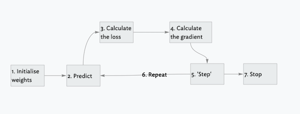

Some foundations for machine learning with PyTorch
I outline the basic process that a computer uses when training a model, greatly simplified and all explained through the lens of PyTorch and how it calculates gradients. These are some pre-requisite foundations that we will later apply to our Fashion MNIST dataset.
In the previous post I showed a naive approach to calculating the similarity or difference between images, and how that could be used to create a function that did pretty well at estimating whether any particular image was a pullover or a dress.
Chapter 4 of the fastbook then takes us on a journey showing a smarter approach where the computer can make even better estimations and predictions. The broad strokes of this approach are simple to grasp, but of course the individual details are where the nuances of machine learning are to be found.
Seven steps for a machine to learn

1. Initialise a set of weights
We use random values start with. There could potentially be more elaborate / fancy ways to calculate some starting values that are closer to our end goal, but in practice it is unnecessary because we have a process that we are going to use to update our values.
2. Use the weights to make a prediction
We check whether the sets of weights we have currently set as part of our function are the right ones. We check the prediction (i.e. what came out the other end of our model / function) and get a sense of how well our model did.
3. Loss: see how well we did with our predictions
We calculate the loss for our data. How well did we do at predicting what we were trying to predict? We use a number that will be small if our function is doing well. (Note: this is just a convention and otherwise there’s no special reason for this.)
4. Calculate the gradients across all the weights
We are calculating the gradient for lots of numbers, not just a single value. For every stage, we get back the gradient for all of the numbers. This is done sequentially, where we calculate the gradient for one weight / number, keeping all the other numbers constant, and then we repeat this for all the other weights.
Gradient calculation relates to calculating derivatives and with this we are stepping firmly into the space of calculus. I don’t fully understand how all this works, but intuitively, the important thing to know is this: we are calculating the change of the value, not the value itself. I.e. we want to know how things will change (by how much, and in what direction) if we shift this value slightly.
Note that the process of calculating the gradients is a performance optimisation. We could just as well have done this with a (slower) manual process where we adjust a little bit each time. With the gradient calculations we can take bigger steps in the direction we want, with more precision guiding our guesses about the direction and distance we want to go.
5. ‘Step’: Update the weights
This is where we increase or decrease our own weights by a small amount and see whether the loss goes up or down. As hinted in step 4, we use calculus to figure out:
which direction to go in
how much we should increase or decrease our own weights
6. Repeat starting at step 2
This is an iterative process.
7. Iterate until we decide to stop
There are various criteria determining when we should stop. Some possible stopping points might include:
when the model is ‘good enough’ for our use case
when we have run out of time (or money!)
when the accuracy starts getting worse (i.e. the model isn’t performing as well)
Calculating gradients with PyTorch
For those of us who don’t bring a strong mathematics foundation into this space, the mention of calculus, derivatives and gradients isn’t especially reassuring, but rest assured that PyTorch can help us out during this process.
There are three main parts to using PyTorch to calculate gradients (i.e. step four of the seven steps listed above.)
1. Setup: add .requires_grad_() to a tensor
For any Tensor where we know we’re going to want to calculate the gradients of values, we call .require_grad() on that Tensor.
# we define a simple functiondef f(x):return x**2x_tensor = torch.tensor(3.).requires_grad_()y_tensor = f(x_tensor)y_tensor
tensor(9., grad_fn=<PowBackward0>)
Here we can see that 3 squared is indeed 9, and we can see the grad_fn as part of the Tensor.
2. Use .backward() to calculate the gradient
This actually refers to backpropagation, something which is explained much later in the book. This step is also known as the ‘backward pass’. Note, that this is again another piece of jargon that we just have to learn. In reality this method might as well have been called .calculate_gradients().
y_tensor.backward()
3. Access the gradient via the .grad attribute
We view the gradient by checking this .grad attribute.
x_tensor.grad
tensor(6.)
I can’t explain why this is the case, since I’ve never learned how to calculate gradients or derivatives (or anything about calculus, for that matter!) but in any case it’s not really important.
Note that we can do this whole process over Tensors that are more complex than illustrated in the above simple example:
Something else I discovered while doing this was that gradients can only be calculated on floating point values, so this is why when we create x_tensor and complex_x we create them with floating point values (3. etc) instead of just integers. In reality, I think there will be some kind of normalisation of our values as part of the process, so they would probably already be floats, but it’s worth noting.
‘Stepping’: using learning rates to figure out how much to step
Now that we know how to calculate gradients, the key question for the fifth step in our seven-step process is the following:
“How much should we shift our values based on what we get back from our gradient calculations?
We call this amount the ‘learning rate’, and it is usually a value between 0.001 and 0.1. Very small, in other words :)
We adjust our weights / parameters by this basic equation:
weights -= weights.grad * learning_rate
This process is called “stepping the parameters” and it uses an optimisation step.
The learning rate shouldn’t be too high, else our loss can get higher / worse or otherwise we can just bounce around within the boundaries of our function without ever reaching the optimum (== lowest) loss.
At the same time, we shouldn’t use a very tiny learning rate (i.e. even tinier than the 0.001-0.1 mentioned above) since then the process will take a really long time and while we might reach the optimum loss at some point, it might not be the fastest way to get there.
Takeaways from the seven-step process
Most of this makes a lot of intuitive sense to me. The parts that don’t are what is going on with the gradient calculations and finding of derivatives and so on. For now, it appears that I can get away without understanding precisely how that works. It is enough to appreciate that we have a way to make these calculations, and those calculations are optimised for us